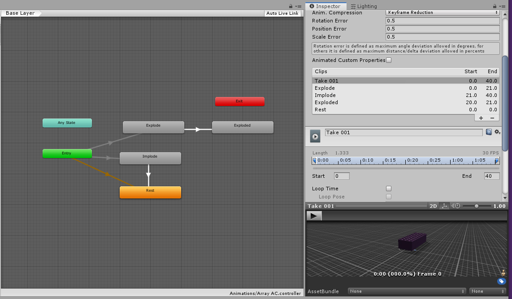

Unity Animation and Animation Import Overview
Core Principles
Core Principles (view for week 3) – Please review Panopto Videos on Unity
Teaches: Narrative and Triggered Animation, Unity Animation and Animator systems, Animator Controller and States, Access by Public GO, Find and GetComponent
Task 4.1 - Unity Animation of Lego Brick
Video: Animation Part 1
Video: Animation Part 2
Video: Animation Part 3
-
Import Lego Brick and add narrative animation
- Create Plane, place at 0,0,0, and scale to 10,1,5
- Import a single lego brick and duplicate it twice, rename to brick 01, 02, 03
- Duplicate and replace materials to be R,G,B
- Position with snapping (hold CTRL) https://learn.unity.com/tutorial/unity-tips#5c7f8528edbc2a002053b473
- Select Brick we will animate in X
- Open Window, Animation
- Create Animator/Animation, name as AnimX.anim
- Add Property: Transform/Position
- Turn on record button
- See the start key
- Drag transport to 0:30,
- With Translate gimbal selected ("w" key), drag brick in X axis, See the new key made by recording. Turn off recording mode
- Start keyframe of position.x at 0:00 - copy
- Drag transport to 1:00, paste position.x key here
- Drag transport bar back and forth to check animation.
- Open Assets Folder and Inspector to see Animator Controller
- Open Animator Window to see State machine and Animation
- Press play button to view narrative animation created in Unity!
- Repeat for other bricks in Y and Z axes, try without recording.
-
Program input key to trigger Unity Animations
- Create New Script for Lego Brick 01 - call Animator Trigger
- With Lego Brick 01 selected:
- Create New Animation in Animation Window - name Rest
- This should be at the start position and not move
- Drag the Rest animation into the Animator window for Lego Brick 01
- Right click "Rest" Animation to make it the default state (There needs to be one at all times)
- Delete transition to AnimX, connect to Any State
- Make transition to Exit State
- Use key input code to trigger and play AnimX
- Add a Box collider and select trigger box
- Use mousedown code to trigger and play AnimX
- Repeat for other bricks
Code:
(I've left the scripts in, as they are simple, and the rest may be tricky to set up correctly. Please do type them in though, for muscle memory and comprehension, then try some stretch targets)
Pseudo Code: Task 4.1 - Trigger Animations in Animator: AnimatorTrigger
using System.Collections;
using System.Collections.Generic;
using UnityEngine;
public class AnimatorTrigger : MonoBehaviour
{
// Start is called before the first frame update
void Start()
{
}
// Update is called once per frame
void Update()
{
if (Input.GetKeyDown("1"))
{
this.GetComponent<Animator>().Play("AnimX");
}
}
void OnMouseDown()
{
this.GetComponent<Animator>().Play("AnimX");
}
}
Task 4.2 - 3DS Max Animation Import - Lego Brick Array
Video: Animation Import Part 1
Video: Animation Import Part 2
- Import brick with multiple animations - array
-
Divide into resting, explode, explode rest, and implode animations
- Rest - 0,0
- Explode - 0-20
- Explode Rest -20-21 (needed to work correctly)
- Implode = 21-40
- Setup animator controller and explode, implode off of entry
- Create bricks to trigger explode and implode
- Put script on explode brick to access the explode by public GO variable
- Put script on implode brick to access the implode by FindObject.GetComponent.Script
- This relies on Animator States to control the exploded, imploded states
Alternate scripted version: Have Boolean to check for exploded, imploded state , Trigger by Mouse Click on Array (all is internal on brick array script)
Make sure you use an explode animation of 20-21 (1 frame) for this to work properly

Code:
(I've left the scripts in, as they are simple, and the rest may be tricky to set up correctly. Please do type them in though, or muscle memory and comprehension, then try some stretch targets)